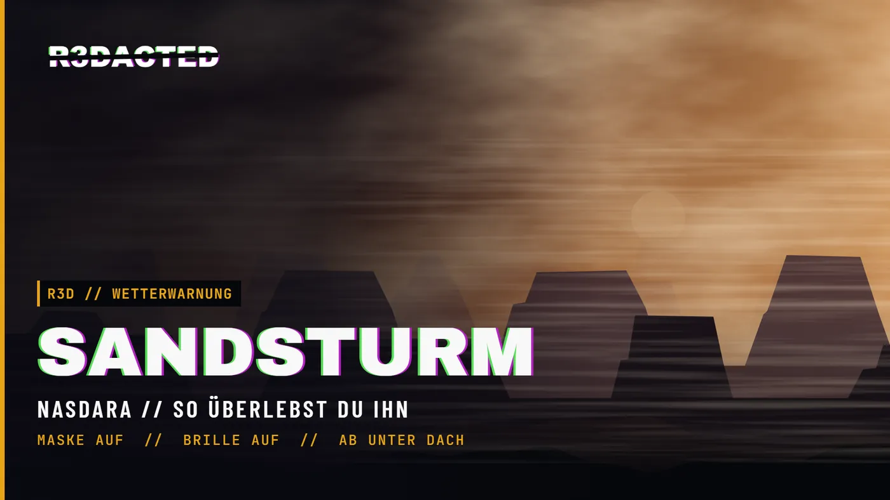

🌪️ Sandsturm – Schutz & FolgenSandstorm – protection & effects
🌪️ Sandsturm auf Nasdara – was er mit dir macht und wie du ihn überstehst.
🌪️ Sandstorms on Nasdara – what they do to you and how to get through them.

Sandsturm
Bei schlechtem Wetter kann über Nasdara eine Staubwand aufziehen. Sie kommt ohne Vorwarnung, die Sicht bricht ein, und der Staub geht dir auf Lunge und Augen.
⏱️ Wie lange & wie oft?
Meist rund 30 Minuten (etwa 25–40 min): kurz aufziehen, dann die volle Phase, am Ende flaut er ab. Dreht der Wind, kann er auch früher abbrechen.
Er kommt nur bei schlechtem Wetter und nie zweimal direkt hintereinander.
🫁 Lunge – Staublunge
Ohne Schutz sammelt sich Staub in der Lunge an:
- erst Husten und schweres Atmen
- dann weniger Ausdauer (wie bei einer Lungenentzündung)
- bei viel Staub verlierst du Leben
- im schlimmsten Fall kippst du kurz um (5–10 s, immer wieder, mit Schock)
👁️ Augen
Staub in den Augen: du kneifst die Augen zusammen, das Bild wird gereizt und unscharf. Gefährlich ist das nicht, aber im Kampf oder beim Fahren lästig.
😷 Atemschutz (Lunge)
- Voller Schutz: Gasmaske, Atemschutzmaske (NIOSH), GP5 mit Filter
- Teilweise: Sturmhaube, Payday- und Pantomimen-Maske (ca. 45 %), OP-Maske (25 %)
Ohne Maske schützt keine Brille deine Lunge.
🥽 Augenschutz
- Voller Schutz: Staubschutzbrille (Badlands), Skibrille, taktische Schutzbrille, Gasmaske, GP5, Airborne-Maske
- Teilweise: Sportbrille (70 %), Pilotenbrille & normale Brillen (30–40 %), Keffiyeh (20 %)
🏠 Deckung
Komplett geschützt bist du in einem Gebäude (unter Dach und drinnen), unter der Erde oder im Auto. Ein Vordach oder ein offener Unterstand reicht nicht.
Der Wechsel greift nach etwa 1–2 Sekunden.
💊 Wieder gesund werden
Beides klingt von selbst ab, sobald du aus dem Staub raus bist. Die Augen sind nach wenigen Minuten wieder klar, die Lunge braucht länger. Bewusstlos heilt nichts.
💡 Tipp
Pack Maske + Brille ins Inventar, sobald du in die Wüste gehst. Wird es draußen braun: rein ins nächste Haus oder ins Auto und warten.
Sandstorm
In bad weather a wall of dust can roll over Nasdara. It comes without warning, visibility drops, and the dust gets into your lungs and eyes.
⏱️ How long & how often?
Usually around 30 minutes (roughly 25–40 min): it builds up, rages, then dies down. If the wind turns, it can end early.
It only comes in bad weather and never twice in a row.
🫁 Lungs – silicosis
Without protection dust builds up in your lungs:
- first coughing and heavy breathing
- then less stamina (like pneumonia)
- with a lot of dust you lose health
- at worst you pass out briefly (5–10 s, repeatedly, with shock)
👁️ Eyes
Dust in your eyes makes you squint and blurs your view. Not dangerous, but annoying in a fight or while driving.
😷 Breathing protection (lungs)
- Full: gas mask, NIOSH respirator, GP5 with filter
- Partial: balaclava, Payday and mime mask (approx. 45 %), surgical mask (25 %)
Glasses do nothing for your lungs.
🥽 Eye protection
- Full: dust goggles (Badlands), ski goggles, tactical goggles, gas mask, GP5, Airborne mask
- Partial: sport glasses (70 %), aviators & normal glasses (30–40 %), keffiyeh (20 %)
🏠 Shelter
You are fully safe inside a building (under a roof and indoors), underground or in a car. A porch or an open shelter is not enough.
The switch takes about 1–2 seconds.
💊 Recovering
Both wear off on their own once you are out of the dust. Your eyes clear up within a few minutes, your lungs take longer. Being unconscious does not heal it.
💡 Tip
Carry a mask + goggles whenever you head into the desert. When the sky turns brown: get into the nearest house or car and wait it out.